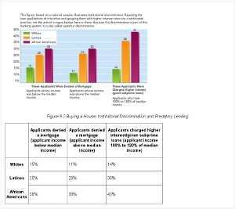

Sample 3: Institutional Discrimination Bar Chart

View a larger version of this image.
This bar chart about institutional discrimination is taken from a postsecondary sociology textbook. The full page where it appears can be seen below.
View a larger version of this image.
Making This Image Accessible
This image can be made accessible with image descriptions or by creating a tactile graphic that would support different learning styles and braille readers. The choice of modality varies depending on factors such as the information to be conveyed, grade level, student knowledge and experience, and the image itself. In this example, it is necessary to provide both a short description and a long description. Since there are several equally effective ways to describe the image, we have provided two short descriptions and two long descriptions.
How an image description is displayed depends on the reading tool being used. In most mainstream reading tools, the description will not be displayed at all, but in tools designed for accessibility (or mainstream tools with accessible features enabled), the description could be displayed below the image, voiced as part of the content, or both.
This is an example of an image in which text is embedded in the image and is not accessible. The content needs to be extracted from the image and included in the description.
Short Text or Audio Description
Option 1:
Figure 9.2, based on a national sample, displays three bar graphs that illustrate institutional discrimination and predatory lending for house loans.
Option 2:
A bar graph shows that Latino and African American applicants both below and above median income levels are more likely to be denied mortgages or charged higher interest rates.
EPUB 3
View a larger version of this image.
The image above shows how the short image description would look when implemented in an EPUB 3 file. The code used to create it is:
<figure>
<img src="images/images/soc.jpg" aria-describedby="soc-desc" alt="bar chart of institutional discrimination"/>
<figcaption>
Figure 9.2 Buying a House: Institutional Discrimination and Predatory Lending
<details id="soc-desc">
<summary>Description</summary>
<p>
Figure 9.2, based on a national sample, displays three bar graphs that
illustrate institutional discrimination and predatory lending for house loans.
</p>
</details>
</figcaption>
</figure>
DAISY
View a larger version of this image.
The image above shows how the short image description would look when implemented in a DAISY file. The code used to create it is:
<imggroup><p><img id="soc1" src="images/soc.jpg" alt="bar chart of institutional discrimination" /></p>
<caption>Figure 9.2 Buying a House: Institutional Discrimination and Predatory Lending</caption>
<prodnote id="prodnote_000001">
<p smilref="soc.smil#p_000001">
Figure 9.2, based on a national sample, displays three bar graphs that illustrate institutional discrimination and predatory lending.
</p><p>
</prodnote></imggroup>
Long Text or Audio Description
There are several ways to provide an extended description of the data from the bar chart. Two possibilities are shown below, a list and a table.
Option 1:
Group 1: Applicants whose income was below the median income and were denied mortgages:
15% of Whites
25% of Latinos
30% of African Americans
Group 2: Applicants whose income was above the median income and were denied mortgages:
11% of Whites
26% of Latinos
30% of African Americans
Group 3: Applicants whose income was 100% to 120% of the median income. These applicants' mortgage applications were approved, but they were charged higher interest or given subprime loans.
14% of Whites
36% of Latinos
43% of African Americans
Option 2:
Applicants denied a mortgage (applicant income below median income) | Applicants denied a mortgage (applicant income above median income) | Applicants charged higher interest/given subprime loans (applicant income 100% to 120% of median income) | |
|---|---|---|---|
Whites | 15% | 11% | 14% |
Latinos | 25% | 26% | 36% |
African Americans | 30% | 30% | 43% |
EPUB 3
View a larger version of this image.
The image above shows how the long image description would look when implemented in an EPUB 3 file. The code used to create it is:
<figure> <img src="images/images/soc.jpg" aria-describedby="soc-desc" alt="bar chart of institutional discrimination"/> <figcaption> <p> Figure 9.2 Buying a House: Institutional Discrimination and Predatory Lending </p> <details id="map_desc"> <summary>Description</summary> <table border="1" width="70%"> <thead><tr><th> </th><th><p>Applicants denied a mortgage (applicant income below median income)</p></th> <th><p>Applicants denied a mortgage (applicant income above median income)</p></th> <th><p>Applicants charged higher interest/given subprime loans (applicant income 100% to 120% of median income)</p></th></tr></thead> <tr><th><p>Whites</p></th><td><p>15%</p></td><td><p>11%</p></td><td><p>14%</p></td></tr> <tr><th><p>Latinos</p></th><td><p>25%</p></td><td><p>26%</p></td><td><p>36%</p></td></tr> <tr><th><p>African Americans</p></th><td><p>30%</p></td><td><p>30%</p></td><td><p>43%</p></td></tr> </table> </details> </figcaption> </figure>
DAISY

View a larger version of this image.
The image above shows how the long image description would look when implemented in a DAISY file. The code used to create it is:
<imggroup><p><img id="soc1" src="images/soc.jpg" alt="bar chart of institutional discrimination" /></p> <caption imgref="soc1"> Figure 9.2 Buying a House: Institutional Discrimination and Predatory Lending </caption> <prodnote id="prodnote_000001"> <p smilref="soc.smil#p_000001"></p> <table border="1" width="70%"> <thead><tr><th> </th><th><p>Applicants denied a mortgage (applicant income below median income)</p></th> <th><p>Applicants denied a mortgage (applicant income above median income)</p></th> <th><p>Applicants charged higher interest/given subprime loans (applicant income 100% to 120% of median income)</p></th></tr></thead> <tr><th><p>Whites</p></th><td><p>15%</p></td><td><p>11%</p></td><td><p>14%</p></td></tr> <tr><th><p>Latinos</p></th><td><p>25%</p></td><td><p>26%</p></td><td><p>36%</p></td></tr> <tr><th><p>African Americans</p></th><td><p>30%</p></td><td><p>30%</p></td><td><p>43%</p></td></tr> </table> </prodnote></imggroup>
Tactile Graphic
A tactile graphic allows the images to be interpreted manually. This graphic was developed for a high resolution graphics embosser.